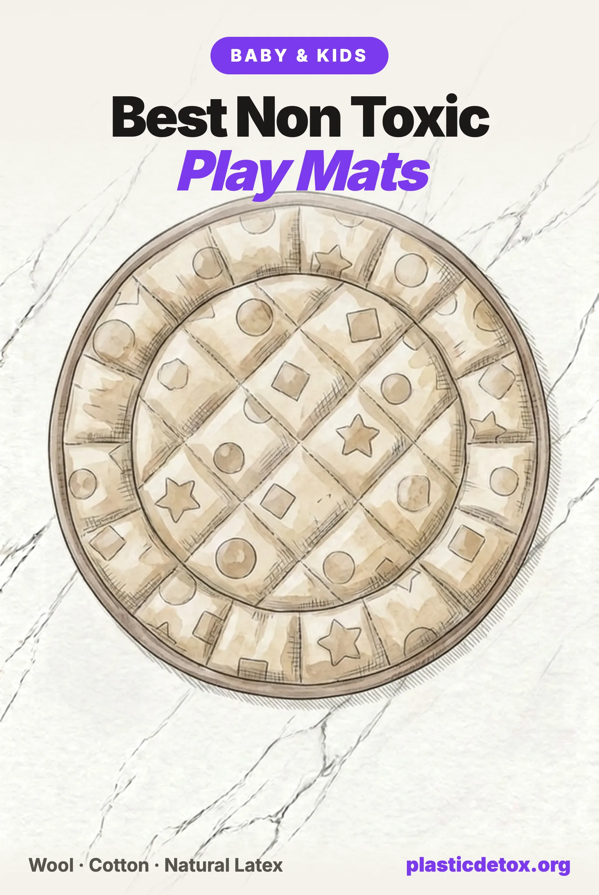

Best Non Toxic Play Mats: The Foam Problem and the Natural Mats That Pass (2026)

The 30 Second Summary
- The foam is not fine. In 2022 the Hong Kong Consumer Council lab tested 20 foam play mats and detected formamide, an EU classified reproductive toxicant, in 15 of them. Six exceeded the EU limit, the worst at 2,000 mg/kg, nine times over. The United States has no formamide limit at all, in play mats or anything else.
- The padded history is worse. When Duke University analyzed 24 polyurethane childcare nap mats in 2013, 22 contained flame retardants, including chlorinated Tris, the chemical removed from children's pajamas in the 1970s.
- Read past the words "organic cotton." Lovevery's Play Gym mat is polyester by its own product description, several "100% organic cotton" mats hide a polyester or undisclosed fill, and "vegan leather" means polyurethane plastic.
- Our top pick is the oldest baby surface there is. The Woolino merino sheepskin is about 79 dollars, carries an OEKO-TEX Leather Standard baby class certificate, and holds 4.8 stars across 800 plus reviews. For awake, supervised floor time only, never for sleep.
- Padded and washable both exist without foam. The MakeMake Organics GOTS cotton mat machine washes, the Lorena Canals washable cotton rug survives years of spills, and the Toki mat pads with natural latex instead of any synthetic foam.
Your Baby's Biggest Exposure Surface
A play mat is not furniture. For the first two years it is the surface your child spends the most waking hours pressed against: face down in tummy time, palms flat while crawling, and, because this is a baby, mouth directly on it. Whatever the mat is made of, your baby is in closer and longer contact with it than with any toy you will ever vet.
The floor is also where the dust lives, and dust is how small children take in microplastics. When researchers measured PET microplastics in indoor dust across 12 countries, they found them in every single sample and estimated that infants swallow roughly ten times more than adults. A 2025 follow up put toddlers at about twelve times adult intake per kilogram of body weight, driven by exactly the behavior a play mat hosts: floor time and hand to mouth contact. We covered that evidence, and the sealed vacuum that actually removes floor dust, in our vacuum guide.
So the question this article answers is narrow and worth getting right: what should the one surface your baby lives on be made of? The industry's default answer is foam. Here is what testing keeps finding in it.
The Formamide Story
In late 2010, French inspectors found formamide in the colorful EVA foam puzzle mats sold in nearly every baby store, and France suspended the entire product category from its market that December. Formamide is classified in the EU as toxic to reproduction, and in foam mats it is a residue of manufacturing, most often linked to the blowing agents that give foam its softness. It does not stay in the mat: the French agency ANSES measured new mats emitting 50 to 200 micrograms per cubic meter during their first week, falling to 20 to 30 after a month, into the low layer of air where a baby breathes.
The EU turned that finding into law. Since May 2017, any foam toy material for children under 36 months containing more than 200 mg/kg of formamide must pass an emission chamber test, with emissions capped at 20 micrograms per cubic meter after 28 days. Europe even published a dedicated test standard for it in 2025.
If that sounds like an old problem that regulation solved, the most recent independent lab data says otherwise. In April 2022 the Hong Kong Consumer Council tested 20 foam play mats, puzzle tiles, roll mats and folding mats alike:
| Finding | Result |
|---|---|
| Formamide detected | 15 of 20 models (75%) |
| Exceeded the EU limit of 200 mg/kg | 6 models |
| Range among the failing models | 290 to 2,000 mg/kg |
| Shed small parts in torque and tension tests | 6 models |
The worst mat carried nine times the European limit. And that is the finding from a market where a limit exists to compare against. In the United States there is no limit, which brings us to the part of this story most parents have never heard.
The Foam Decoder
"Non toxic foam" is doing a lot of unexamined work on play mat listings. The foams are not interchangeable, and a 2025 peer reviewed study in Ecotoxicology and Environmental Safety finally put numbers on the difference: researchers screened 34 play mats across four foam families for 71 volatile substances, with formamide, toluene and alpha methylstyrene among the highest risk findings, and ranked the families cleanest to worst: expanded polyethylene, then cross linked polyethylene, then PVC, with EVA last.
EVA is the puzzle tile foam and the category's default, and it carries the formamide problem above. It is also a polymer documented to shed particles as it abrades, and worn puzzle tiles visibly flake and crumble at the seams, into exactly the floor dust a crawling baby ingests.
PVC is the material of the big one piece Korean style mats. Vinyl cannot be soft without additives, so a padded PVC mat is by definition a plasticized product. US law caps eight phthalates at 0.1 percent in children's toys, and the major brands advertise phthalate free formulations, but phthalate free PVC still requires substitute plasticizers and stabilizers that appear on no label. Older vinyl children's products ran 11 to 42 percent plasticizer by weight, and when the Ecology Center tested vinyl flooring, 58 percent of tiles contained phthalates in the surface layer. This is the same logic that keeps PVC out of every category we cover.
Polyurethane foam is the padding inside nap mats, tumbling mats and "memory foam" play mats, and it owns the ugliest chapter in this category. In 2013, a coalition of health groups had Duke University analyze 24 childcare nap mats from seven states: 22 of 24 contained added flame retardants, ten different chemicals in all, with triphenyl phosphate in 18 mats and chlorinated Tris, the carcinogen removed from children's pajamas in the 1970s, in 9. The lawsuits that followed pushed manufacturers to drop the chemicals, and a 2016 retest found 2 of 12 mats still contaminated. The category improved because watchdogs forced it to, not because the foam changed.
"Vegan leather," "PU leather" and most wipe clean surfaces are polyurethane plastic films. Some brands bond that film over EVA foam, some over memory foam, and one popular brand's "vegan leather" mats are actually bonded leather: 72 percent polyurethane blended with 28 percent genuine leather fibers, which is neither vegan nor plastic free.
Polyethylene foams, the EPE and XPE of Amazon listings, are the honest end of the foam spectrum: made without formamide linked blowing agents and cleanest in the 2025 volatile screening. If a household truly needs foam, polyethylene is the family to insist on. But our picks below show you do not need foam at all.
What the US Regulates, and What It Does Not
US law does real work on one front: since 2018, eight phthalates are banned above 0.1 percent in any plasticized part of a children's toy, and play mats qualify. That rule has teeth, and it is why the vinyl mat sold today is less hazardous than its 2005 ancestor.
On formamide, the shelf is bare. There is no CPSC rule, no provision in ASTM F963, the mandatory US toy standard, and the chemical does not appear even on Washington State's disclosure list of chemicals of high concern to children. A New York legislator asked the CPSC to investigate formamide in puzzle mats back in 2011; no rulemaking ever followed. We verified something starker while researching this article: no foam play mat has ever been recalled in the United States for a chemical hazard. Every enforcement action in this category's history, the French suspension, the EU limits, the Hong Kong findings, happened somewhere else. An American shelf mat has been screened for formamide only if its brand volunteered.
One consequence is that brands fill the vacuum with their own numbers. One careful EVA brand's compliance page cites a US formamide threshold of 1,000 ppm; we could find no US regulation behind that figure. When even the diligent brands cite a rule that does not exist, the takeaway is not that the brands are careless. It is that there is nothing real to cite.
What did change recently: the CPSC's infant support cushion rule took effect in May 2025, imposing firmness and labeling requirements on padded infant products because babies had died sleeping on soft lounging surfaces. Padded play gym mats can fall inside it, the first enforcement recall came in January 2026, and two of the biggest names in this category are currently in court over its reach. More on that in the play gym section, because it changes how every padded mat should be used: awake, supervised time only, never sleep.
The Materials That Win
Everything we picked keeps synthetic foam and synthetic fiber out of the layer your baby touches, and where a product contains any synthetic at all, we say so in the card rather than let a certification imply otherwise.
Wool is the original baby surface. A shorn merino sheepskin cushions like a pad, regulates temperature in both directions, resists dust and stains with its own lanolin rather than a chemical finish, and sheds no plastic. Look for an OEKO-TEX Leather Standard certificate in the baby class, which screens the tanned skin for harmful residues including chromium VI. The non negotiable caveat: pediatric safe sleep guidance is explicit that sheepskins never go in a sleep environment. This is a floor surface for supervised awake time.
Organic cotton makes the washable workhorses: quilted mats and flatweave rugs that go through the machine after the inevitable. GOTS certification covers the cotton itself; the honest detail to check is the fill, which even in well made organic mats is often polyester batting. We flag it card by card below.
Natural latex is the padding answer. Foamed rubber tree sap gives the cushioning parents actually want from EVA tiles with none of the blowing agent chemistry. The trade offs are price and the latex allergy question, which affected families should take seriously.
What about waterproofing? Every genuinely wipe clean surface in this category is a plastic film, and the cotton and wool options above are washable rather than waterproof. That is the honest trade: a towel under the baby during messy phases costs nothing and keeps the surface natural.
Our Picks
Every pick passed the same five point vet we run on everything: materials, what touches the skin, independent tests and certifications where they exist, lawsuits, and recalls. All Amazon picks were in stock and buyable the day we published, with review counts current the same day. As always, the top pick among safety passing products is decided by owner reviews.

Woolino Merino Sheepskin Rug
100% Australian merino lambskin, about 2 x 3 feet, shorn 1.2 inch pile. OEKO-TEX Leather Standard baby class certified. 4.8 stars across 800 plus ratings. Awake floor time only.
View →
MakeMake Organics Quilted Play Mat
48 inch round quilted mat, GOTS certified organic cotton shell with azo free dyes over an OEKO-TEX certified polyester batting, stated plainly. Machine washable. 4.8 stars.
View →
Lorena Canals ABC Washable Rug
Hand made 5 foot round rug, cotton pile (97% cotton, 3% other fibers) on a recycled cotton base, non toxic dyes, whole rug machine washable. Doubles as the room's rug for years.
View →
Toki Mat (Toki Kids)
GOTS certified organic cotton cover over a 1 inch natural Dunlop latex core, OEKO-TEX certified, no synthetic foam. From about 185 dollars, sold direct. Check latex allergies first.
View →Why the Woolino leads
Several products passed our materials and legal screens, so owner reviews broke the tie, and nothing else in the category is close: 800 plus ratings at 4.8 stars, against 45 for the MakeMake and 43 for the Lorena Canals. It is also the only pick whose exact surface carries an independent certificate, the OEKO-TEX Leather Standard in the baby class, which screens the tanned skin itself for harmful residues. Full disclosure on the brand: Woolino recalled about 4,100 wool footed pajamas in 2017 for failing to meet the federal children's sleepwear flammability standard, with no incidents reported; the sheepskin was never involved. The honest limitations are that it spot cleans rather than machine washes, and it is never a sleep surface, a rule we repeat because it matters: sheepskins are on the pediatric list of soft objects that stay out of cribs.
The purist option in the category is the Under the Nile handwoven cotton rug: 100 percent GOTS certified organic Egyptian cotton, hand loomed from the offcuts of their clothing production, with no fill of any kind. Its Amazon listing had no active offer when we checked, so it gets a direct link rather than a card. And if you want the padded Toki without the price, watch their sale sections; the covers and inserts are also sold separately, which stretches the mat across two kids.
Play Gyms and the New Cushion Rule
Most parents meet this category through a play gym, and the biggest name in play gyms is a good case study in reading past the marketing.
The Lovevery Play Gym is a genuinely well designed product with an excellent safety record for the gym itself, and we have recommended it in the past. Researching this article changed that. Lovevery's own product description states the mat is made with machine washable polyester; the organic cotton is in the accessories, the teether and the ball, not the surface your baby lies on. A polyester mat sheds synthetic fiber into floor dust the same way the polypropylene rugs we warn about in our nursery guide do. Two Lovevery recalls exist, both for choking hazards in other play kits, neither for the gym. If you already own one, the wood frame and the toys are the product's strengths; lay a cotton quilt or one of our picks over the mat and you have kept them. We corrected our store and earlier articles, which had repeated the organic cotton claim for the mat.
The regulatory backdrop is shifting under padded baby products generally. The CPSC's infant support cushion rule took effect in May 2025 after the agency tied 79 deaths over twelve years to babies sleeping on soft lounging products. Padded gym mats can fall inside its scope: the first enforcement recall, a convertible baby gym sold on TikTok Shop, came in January 2026, Snuggle Me is petitioning against the rule in federal court, and Lovevery filed in support of narrowing it. Wherever the litigation lands, the practical rule for parents does not change: padded mats and gyms are for awake, supervised time, and sleep happens on a firm bare crib mattress.
Brands and Categories We Did Not Pick
EVA puzzle tiles: BalanceFrom, Yay Mats, Skip Hop Playspot
The budget puzzle tile market shares one profile: EVA foam, the word "non toxic" on the listing, and no published chemistry to back it. BalanceFrom sells the category's best selling tiles with no certifications or formamide results we could find anywhere; Yay Mats publishes none either; and Skip Hop discloses no formamide testing for its Playspot tiles. Skip Hop's broader record includes a 2023 recall of 472,850 Silver Lining Cloud activity gyms for detaching choking hazards. None of these brands has a US chemical violation on record, but with no US formamide rule, that is not the reassurance it sounds like. The one EVA brand that does test is Toddlekind, whose mats are screened annually by SGS against the EU limits with formamide often not detected; if a foam tile must enter your house, that is the honest minimum, and it is still EVA.
PVC one piece mats: Baby Care, Dwinguler
The thick Korean style one piece mats are impressive products with loyal owners, EN71 test claims, and a material problem no formulation fixes: they are PVC. Baby Care's own listings describe a waterproof firm PVC play mat, phthalate free and EVA free. We take the claims at face value and still pass, because vinyl cannot be soft without plasticizers, the substitutes appear on no label, and this is a surface babies mouth for hours. If maximum cushioning matters more to you than the material, the polyethylene foam mats (CreamHaus's Inua line is PE foam under a polyurethane cover) sit meaningfully higher in the 2025 volatile safety ranking than PVC or EVA.
Gathre, House of Noa, and the wipe clean aesthetic
Gathre's beautiful mats are bonded leather, 72 percent polyurethane with 28 percent genuine leather fibers by the brand's own materials page, with no published third party chemistry. House of Noa's play mats are EVA foam under a printed film, and the GREENGUARD Gold and CertiPUR certificates on its site belong to its furniture line, not the mats. Hakuna Matte's plush mats pair a polyester top with polyurethane memory foam. None of these brands has a lawsuit or recall on record; the issue is simpler: a wipe clean surface is a plastic film, whatever the label calls it.
Snuggle Me Organic play mat and gym
Snuggle Me's new play mat leads with "100% organic cotton," but the claim attaches to the outer twill; neither the official page nor the listing discloses what the fill is, and the brand carries no GOTS or OEKO-TEX certification. The brand context matters too: a 2024 wrongful death lawsuit over its original infant lounger was settled, the lounger was retired, and the company is currently the lead petitioner fighting the CPSC's infant support cushion rule in federal court. No Snuggle Me product has ever been recalled. We hold featured picks to disclosed materials and a clean adversarial screen, and this one does not clear the bar.
Free Habits That Lower the Dose
- Air out any foam product for its first weeks. The French emission data showed new mats offgassing at their worst during the first week, dropping several fold within a month. If foam enters your house, let it breathe in a ventilated room your child does not use before it goes under the baby.
- Retire crumbling foam immediately. Flaking puzzle tile edges and powdery seams are the mat entering the floor dust. A degrading foam mat is doing daily what a new one does slowly.
- Vacuum the play area weekly with a sealed machine. Floor dust is the delivery route for everything this article describes, and weekly vacuuming measurably lowers what accumulates. Our vacuum guide explains why the seal matters more than the filter.
- Wash the washables on schedule. The cotton picks above go through the machine; the sheepskin shakes out and spot cleans. A mat that gets cleaned keeps its surface out of the mouthing loop.
- Keep every mat out of the crib. Play surfaces are for awake, supervised time. Sleep belongs on a firm, bare crib mattress, full stop.
Frequently Asked Questions
Are EVA foam play mats safe?
EVA foam puzzle mats carry a documented formamide problem. Formamide, classified in the EU as toxic to reproduction, is a residue of foam manufacturing most often linked to the blowing agents, and it offgasses into the low layer of air where a baby breathes. France suspended foam puzzle mats over it in 2010, and the EU now requires any foam toy material over 200 mg/kg of formamide to pass a strict emission test. The concern is not historical: in 2022 the Hong Kong Consumer Council tested 20 foam play mats and detected formamide in 15 of them, with 6 exceeding the EU limit, the worst at 2,000 mg/kg. The United States has no formamide limit at all, so a US shelf mat has never been screened for it unless the brand chose to test.
Is formamide in play mats regulated in the United States?
No. There is no CPSC rule, no CPSIA provision, and no requirement in ASTM F963, the mandatory US toy standard, that limits formamide in foam play mats. It is not even on Washington State's chemicals of high concern to children disclosure list. The EU has restricted it since 2017 with an emission cap of 20 micrograms per cubic meter after 28 days, and there has never been a chemical hazard recall of a foam play mat in the US, which reflects the absence of a rule rather than the absence of the chemical. If a brand claims its foam meets a US formamide limit, be skeptical: no such limit exists.
What is the safest play mat material?
Natural fibers with nothing added: wool, organic cotton, and natural latex. A merino sheepskin with an OEKO-TEX Leather Standard baby class certificate, a GOTS certified organic cotton quilted mat, a washable cotton rug, or a mat with a natural latex core and an organic cotton cover all keep synthetic foam out of the layer your baby touches. If a household needs foam anyway, a 2025 peer reviewed screening of 34 play mats ranked the foam families by volatile substances: expanded polyethylene cleanest, then cross linked polyethylene, then PVC, with EVA last.
Are PVC baby play mats safe?
PVC is the one plastic that cannot be soft without additives, so a padded vinyl mat is by definition a plasticized product. US law caps eight phthalates at 0.1 percent in children's toys, and the big Korean style one piece mats advertise phthalate free formulations tested to European toy standards. But phthalate free PVC still requires substitute plasticizers and stabilizers that do not appear on any label, and a play mat is a surface babies press their faces against and mouth for hours. On a site about reducing plastic exposure, a soft vinyl floor for an infant is an easy no.
Is the Lovevery Play Gym mat organic cotton?
No, and we corrected our own coverage on this. Lovevery's product description says the Play Gym mat is made with machine washable polyester; the organic cotton in the product is limited to accessories like the teether and ball. The wood frame is FSC certified and the toys are well designed, and the product has an excellent review record with no recall. But a polyester mat is a synthetic fiber surface in the exact spot where a baby spends face down time, the same reason we steer nurseries away from polypropylene rugs, so it is not one of our picks.
Can my baby sleep on a play mat or sheepskin?
No. Play mats, padded gym mats, and sheepskins are for awake, supervised floor time only. The American Academy of Pediatrics lists sheepskins among the soft objects to keep out of the infant sleep environment, and the CPSC's infant support cushion rule, in effect since May 2025, exists because padded lounging products have been tied to suffocation deaths when babies sleep on them. A firm, bare crib mattress is the only sleep surface an infant needs. Use the mat for tummy time and play while you are watching, and move a drowsy baby to the crib.
Related Articles
- Non Toxic Nursery Setup
The crib mattress, the air, and the floor, in the order that matters. - Non Toxic Baby and Toddler Products Guide
The full product by product guide, from bottles to bath time. - Baby and Kids 101
The step by step room detox for families, ranked by impact. - Best Vacuum Cleaners for Microplastics
Floor dust is the exposure route. The sealed machines that actually capture it. - Best Non Toxic Yoga Mats
The adult version of the same foam problem, and the natural mats that solve it. - Microplastics in Bedroom Air
What sheds into the air of the rooms where your family sleeps.